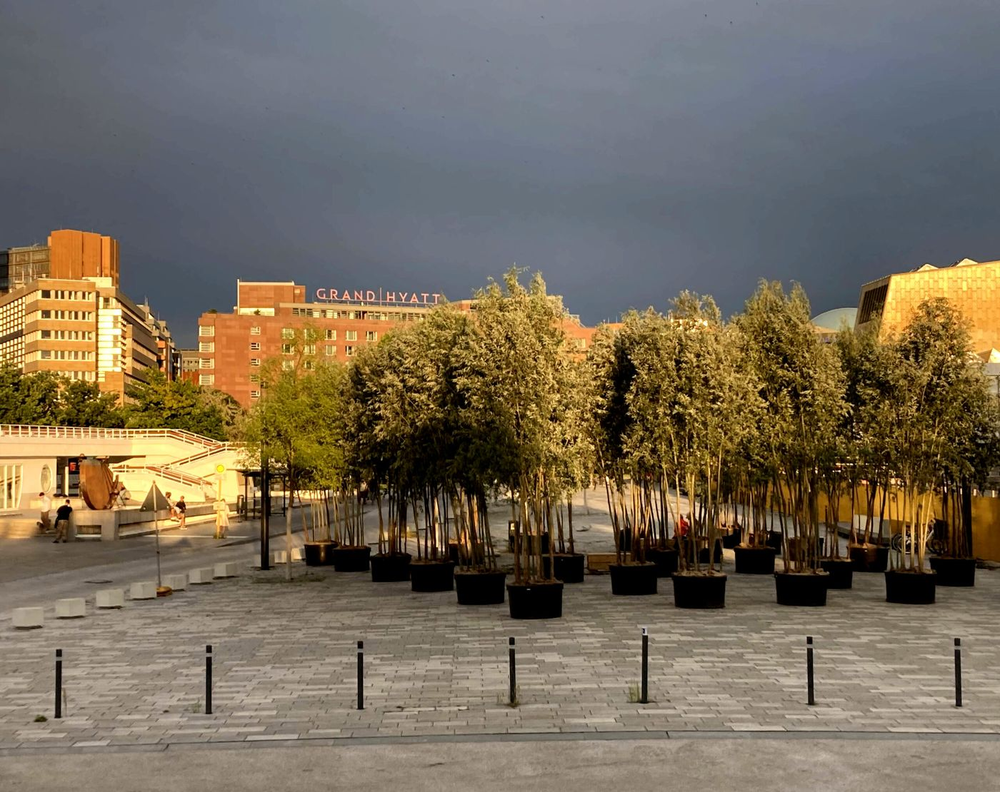

Ein Haus, dann sitzen
Philharmonie und der Platz davor
Nachmittags, höchstens zehn Minuten zwischen den Türen. Kultur, dann Kaffee.
Essen. Golvet, Potsdamer Straße 58. Im Michelin-Beitrag von 2023 hat Golvet einen Stern. Küche: Jonas Zörner. Öffnungszeiten
Stopps
- Philharmonie

Neues vom Scharounplatz - Kulturforum

Jetzt sind die Bäume da - Golvet Öffnungszeiten

Der Guide Michelin 2023 hat gesprochen.
Gelesen
Der Saal von außen, oder hinein, wenn eine offene Probe ist. Das sagen die Beiträge nicht. Sie sagen, was mit dem Platz vor dem Haus geschieht, und was das Mahnmal nebenan zu erklären hat.
Am 17. November 2023: die vor ein paar Jahren verlegten Steine am Scharounplatz, auf dem Streifen entlang der Philharmonie, sind abgesackt. Der Untergrund wird erneuert, die Steine danach neu verlegt. Einige der Bäume in Kübeln aus der „Baumschule Kulturforum“ wurden auf das grüne Rondell der St. Matthäus-Kirche umgesetzt.
Wie die Bäume dort hingekommen sind, steht im Stück vom 28. August 2023. Junge Bäume in Pflanztöpfen besiedeln das Gelände, das oft als Steinwüste bezeichnet wird. Klaus Biesenbach, Direktor der Neuen Nationalgalerie und Initiator, hat die Rauminstallation mit dem atelier le balto erarbeitet und kuratiert. Projektträgerin ist die Stiftung St. Matthäus. Seit Ende Mai 2023 stehen heimische und nicht heimische Arten auf der Piazzetta vor dem Café Estrade, auf dem Scharounplatz, und demnächst auf dem Rondell. Auf der Piazzetta unter einer Pergola, an Gewächshäuser angelehnt, die im nächsten Jahr begrünt werden soll. Bambusstäbe gegen den Wind. Sitzgelegenheiten unter den Bäumen. Die Bäume kommen liegend auf dem Lkw, werden in Töpfe gehoben, die Töpfe mit Substrat gefüllt. Ein Topf wiegt bis zu einer halben Tonne. Jutesäcke halten das Substrat feucht. Ein Gartenbaubetrieb gießt. Der Scharounplatz bekommt ein Weiden-Carré aus 25 Bäumen in Pflanztrögen, dazu Bänke. Die Installation kann jederzeit kostenfrei besucht werden. Am Dienstag der Woche, in der der Beitrag erscheint, kommen noch 37 Bäume für den Scharounplatz, Ende der Woche 18 weitere für die Piazzetta. Schilder mit den Arten sind in Arbeit. Für die Art Week vom 13. bis 17. September 2023 soll vor der Neuen Nationalgalerie eine weitere, ebenfalls temporäre Baumschule entstehen. Am Sonntag, dem 3. September 2023, ab 11 Uhr, „Ein Tag im Grünen“, Eintritt frei, eine Tafel unter freiem Himmel. Der Text fragt, wie es wäre, wenn das Kulturforum immer grün wäre, und zählt auf, was Bäume tun: CO2 binden, Schadstoffe filtern, Sauerstoff, Kühle, Schatten, Raum und Nahrung für Tiere.
Neben der Philharmonie bleibt der Spaziergang von Lia Hiltz und Paul Enck am 3. Februar 2023 am Mahnmal für die Ermordeten der „Euthanasie“ stehen, und er besteht auf den Anführungszeichen. Euthanasie heiße schöner oder guter Tod. Was die Nationalsozialisten organisiert hatten, war die systematische Tötung von mehr als 300.000 vor allem geistig behinderten Menschen in Heimen und Kliniken in ganz Europa. Das Mahnmal heißt auch T4-Denkmal, nach der Adresse Tiergartenstraße 4, dem Haus, in dem dieser Mord geplant wurde. Das Programm begann 1933 in Brandenburg-Görden und dauerte bis zum Kriegsende. Die Tiergartenstraße war vom mittleren 18. Jahrhundert bis zum Krieg ein Wohnviertel der Reichen, vor allem Militärs und Unternehmer. An dieser Adresse ab 1750 ein Oberstleutnant von Kleist, dann der Bankdirektor Reichert, der Bankier Weißbach, zuletzt der Textilfabrikant Georg Liebermann (1844–1926). 1935 mietet die NSDAP die Villa von den Kindern des Fabrikanten, zusammen mit einem Nachbarhaus. 1940 wird sie „arisiert“: die jüdischen Besitzer enteignet, das Haus unter Marktwert an das Reichsfinanzministerium verkauft. Enck fragt, ob diese Morde mit den Judenmorden in den Lagern zu tun haben. Die Forschung, schreibt er, sagt ja: die Tötungen galten als Testfälle und wurden in die Lager exportiert, und sie wurden anhand der Erfahrung dort weiter rationalisiert. In den angeschlossenen Gebieten, Österreich, Elsass-Lothringen, Böhmen und Mähren, Warthegau, ist die „Euthanasie“ belegt, auch Erschießungen von Patienten in Polen und der Sowjetunion, nicht jedoch in Holland, Belgien und Frankreich. Für Italien und Spanien sagt die Forschung nein. Kirchliche Proteste in Deutschland um 1942 haben das Morden nicht verhindert, aber gebremst. Es ging in aller Stille weiter. Für die Menschen in den Heimen war die Bedrohung das Bild der grauen Busse der GEKRAT, der Gemeinnützigen Krankentransportgesellschaft, die in die Gaskammern von Grafeneck, Brandenburg, Heilbronn und anderen Orten fuhr. Das Denkmal der Grauen Busse stand von Januar 2008 bis Januar 2009 am früheren Ort der Villa und fuhr dann weiter nach Brandenburg.
Genannt wird das Café Estrade, vor dem die Piazzetta liegt. Gegessen wird auf dieser Seite im Golvet. Der Michelin-Beitrag vom 15. April 2023: Potsdamer Straße 58, Küchenchef Jonas Zörner, der Stern bleibt. Ein Stern heißt dort: eine Küche voller Finesse, einen Stopp wert.